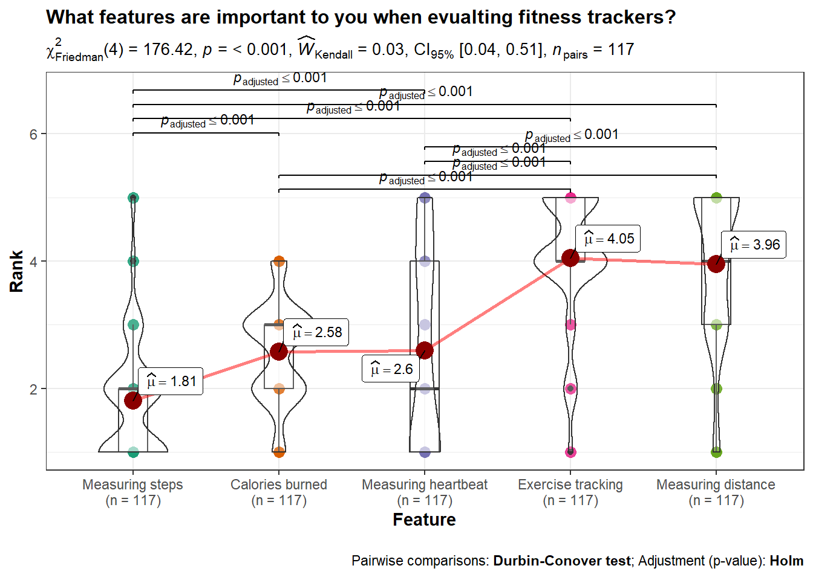
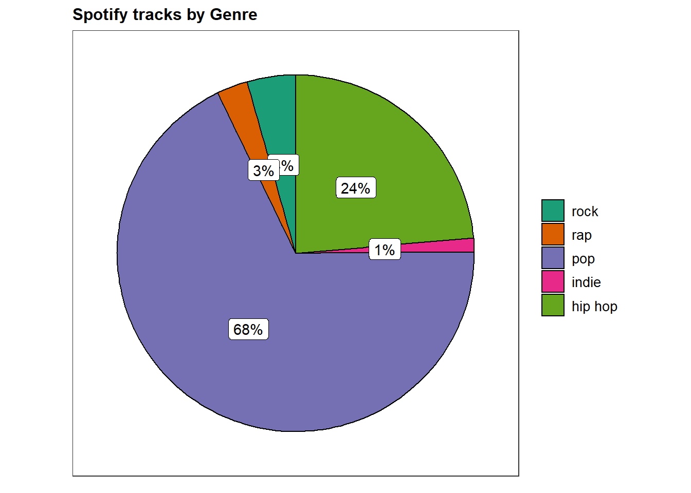
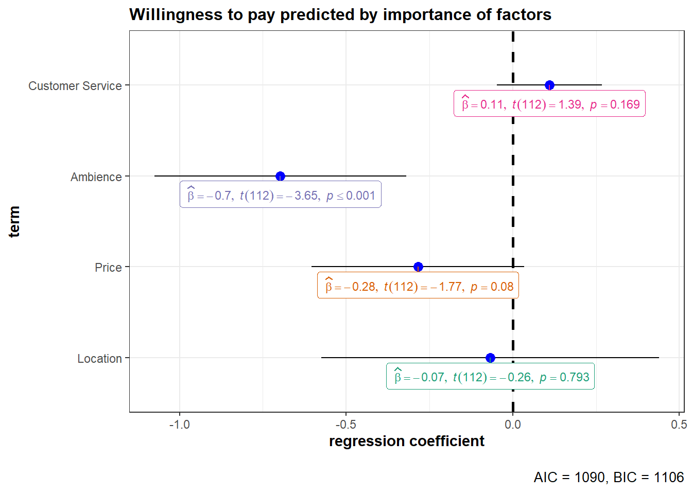
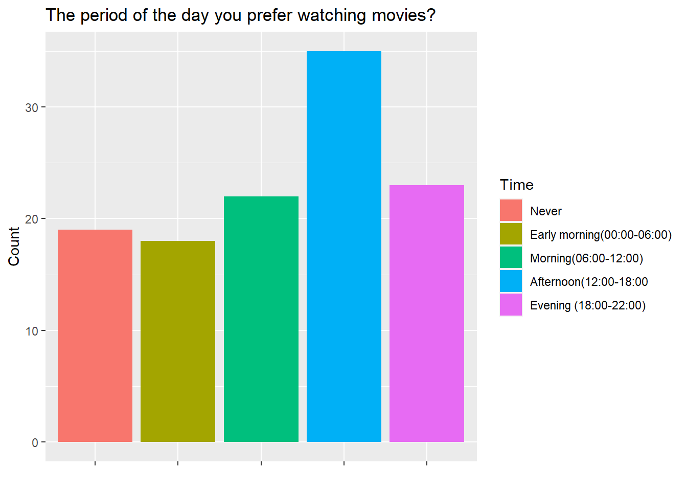
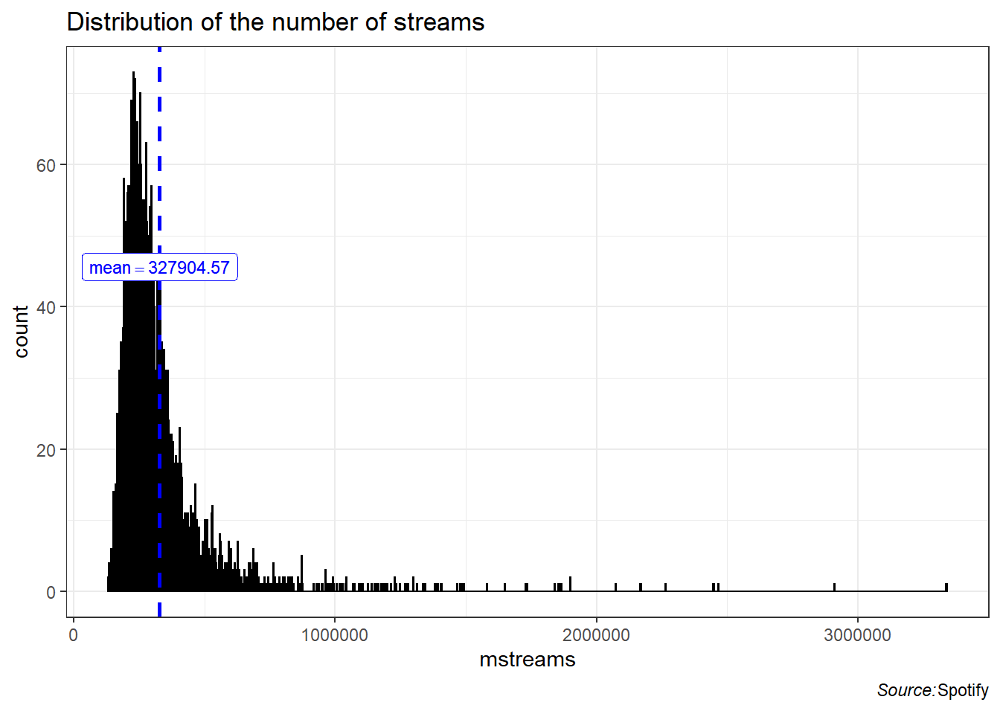
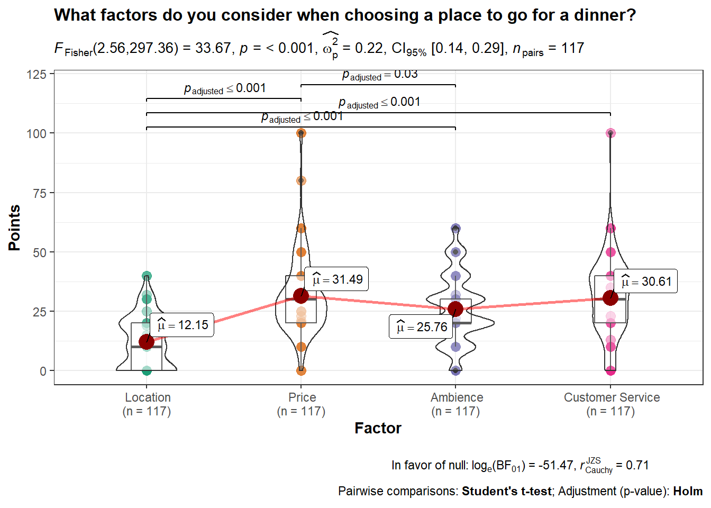

Part 2: Collecting data and analysis
Collecting data
Your task in this part is to collect real data from real people. More specifically, each group member is supposed to administer the questionnaire to 20 persons, i.e. a group of 6 = 120 people per group project.
Data analysis
In this chapter we will encounter the nature of data you collect when conducting a survey. It will help you in handling your survey data in R, and show you which statistical tests you might apply. Note that in focus of this chapter are not statistical test as they are extensively discussed in the previous chapters.
The purpose of this chapter is primary to help you handle and determine data types from your Qualtrics survey. For more information in regards to what statistical tests to use, assumptions or other details, please consult relevant chapters.
Load in a Qualtrics survey data via package “qualtRics”
After downloading your survey in CSV format, you need to install qualtRics and load it in.
read_survey() is a function that loads in survey results in CSV to R.
# Read the qualtrics survey data
qualtrics<-read_survey('data_analysis_survey.csv')
head(qualtrics,3)Current column names are not much helpful in identifying questions from the questionnaire. In order to name columns after corresponding question, the function label_to_colnames() from package sjlabelled can help.
As it can happen that two or more column names are identical, we can use make.unique() function to assign different names to columns that are supposed to have same names. For instance, in our case it is column name ‘Selected choice’ that appears twice for two different questions. After we run the function, the resulting names will be ‘Selected choice’ and ‘Selected choice_1’.
Finally, we can assign unique corresponding names to the columns in our survey data.
Multiple choice with a single answer
Type of data you obtain is categorical, and the output comes in the following form:
| During a typical day, in what period of the day you prefer watching movies or TV series on Netflix? |
|---|
| 3 |
| 4 |
| 5 |
| 4 |
| 5 |
| 2 |
What to do with this data now? First, we need to load it in R and prepare for analysis. The numbers you see in the output R recognizes as numeric. In order to conduct statistical modeling and properly visualize our results, we need to convert our data to a factor class.
A factor (or coding variable) represents different groups of data by using numbers (integers). In fact, factors appear as numeric variables, but they hold meaning of labels/names of data groups, i.e. nominal variable. These data groups are represented in a form of ‘levels’.
In our case, our multiple choice question output will contain 5 data groups after converting it to factor:
# Convert numeric value to factors
qualtrics$`During a typical day, in what period of the day you prefer watching movies or TV series on Netflix?` <- factor(qualtrics$`During a typical day, in what period of the day you prefer watching movies or TV series on Netflix?`, levels = c(1:5), labels = c('Never','Early morning(00:00-06:00)','Morning(06:00-12:00)','Afternoon(12:00-18:00','Evening (18:00-22:00)'))
# Table
table(qualtrics$`During a typical day, in what period of the day you prefer watching movies or TV series on Netflix?`)##
## Never Early morning(00:00-06:00)
## 19 18
## Morning(06:00-12:00) Afternoon(12:00-18:00
## 22 35
## Evening (18:00-22:00)
## 23Fischer’s exact
Fisher’s exact test is used to test a hypothesis with data obtained from multiple choice questions with single answer. Results from multiple choice questions with multiple answers are treated with different test.- Application: when you have 1 dependent variable and 1 independent variable with 2 or more levels/factors
- Used when frequency in at least one cell is less than 5 . When frequencies in each cell are greater than 5, Chi-square test should be used.
- Hypothesis: Is there a significant difference in frequencies between values observed in cells and values expected in cells ?
- H0: There is no relationship between the two categorical variables.Therefore, two categorical variables are independent. Knowing the value of one variable does not help to predict the value of the other variable.
- H1: There is a relationship between the two categorical variables.Therefore, two categorical variables are dependent.Knowing the value of one variable helps to predict the value of the other variable.
- Usually, this type of test is used on 2x2 contingency tables. However, it can be applicable on contingency tables of larger dimensions.
Example: We would like to know whether the preferred period of the day for watching Netflix depends on the respondents’ country of origin.
# Converting characters to factors
qualtrics$` Selected Choice_1` <- factor(qualtrics$` Selected Choice_1`,levels = c(1:2),labels = c("Male","Female"))
qualtrics$` Selected Choice` <- factor(qualtrics$` Selected Choice`, levels = c(1:2), labels=c("Austria","Germany"))
# Creation of contingency table
fisher_test_table <-table(qualtrics$` Selected Choice`,qualtrics$`During a typical day, in what period of the day you prefer watching movies or TV series on Netflix?`)
# Since we have a count less than 5, we should apply Fisher's test instead of Chi-square.
# Fisher's test
test <- fisher.test(fisher_test_table)
test##
## Fisher's Exact Test for Count Data
##
## data: fisher_test_table
## p-value = 0.575
## alternative hypothesis: two.sidedFrom the output and from test$p.value we see that the p-value is higher than the significance level of 5%. Like any other statistical test, if the p-value is higher than the significance level, we can not reject the null hypothesis.
In our case, not rejecting the null hypothesis for the Fisher’s exact test of independence means that there is no significant relationship between the two categorical variables. Therefore, knowing the value of one variable does not help to predict the value of the other variable.
Chi-square test: Goodness of fit & Independence test
- Goodness of fit
- Application: when you only have 1 dependent variable and none independent variables
- Hypothesis: Is there a significant difference in frequencies between values observed in cells and values expected in cells ?
- H0: There is no significant difference between the observed and the expected frequencies.
- H1: There is a significant difference between the observed and the expected frequencies.
- If we don’t specify expected frequency per cell (see in the code below), then it is expected that all cells show an eqaul frequency.
- Example :‘Do the numbers of respondents who prefer watching Netflix in different periods of a day significantly differ from each other?’
- Note that we did not assume any specific distribution, so we are assuming that each count will have the same or similar number.
# Creating table
mlc_chi_square <- table(qualtrics$`During a typical day, in what period of the day you prefer watching movies or TV series on Netflix?`)
# Chi-square test (without given expected values = equal values )
chisq.test(mlc_chi_square)##
## Chi-squared test for given probabilities
##
## data: mlc_chi_square
## X-squared = 7.9145, df = 4, p-value = 0.09476The p-value of the test is higher than 0.05. We can conclude that the numbers of respondents who watch Netflix in different periods of a day are commonly distributed. Observed distribution does not differ significantly from the expected. This result does not surprise if you take a look at the values for each level in the table we created before conducting the test. There you can see that count of answers in each level is more or less not deviating too much. It is visible if you take a look at the previous visualizations as well.
If we are interested in testing more specific distribution, i.e. expect that 40% of our respondents are watching Netflix during evening hours, we can introduce corresponding distribution in the test.
# Expected values in percentages for each alternative. The sum must be 1.
expected_values <- c(0.10, # We expect that 10% of our respondents do not watch Netflix at all.
0.20, # We expect that 20% of our respondents watch Netflix in early morning.
0.10, # We expect that 10% of our respondents watch Netflix in morning.
0.20, # We expect that 20% of our respondents watch Netflix in afternoon.
0.40 # We expect that 40% of our respondents watch Netflix in evening.
)
# Chi-square test with expected values
chisq.test(mlc_chi_square, p=expected_values)##
## Chi-squared test for given probabilities
##
## data: mlc_chi_square
## X-squared = 32.722, df = 4, p-value = 1.362e-06This time the p-value of the test is lower than 0.05. We have an evidence that observed distribution does significantly differ from the expected distribution (10%/20%/10%/20%/40%).
- Chi-Square Test of Independence
- Application: when you have 1 dependent variable and 1 independent variable with 2 or more levels/factors
- Hypothesis: Is there an association between categorical variable X and categorical variable Y?
- H0: There is no association between the two variables.
- H1: There is an association between the two variables.
- Example: Is there an association between gender and the preferred period of a day for watching Netflix?
# Creation of contingency table
chi_square_table <-table(qualtrics$` Selected Choice_1`,qualtrics$'During a typical day, in what period of the day you prefer watching movies or TV series on Netflix?')
# Chi-square independence test
chisq.test(chi_square_table)##
## Pearson's Chi-squared test
##
## data: chi_square_table
## X-squared = 1.5739, df = 4, p-value = 0.8135Since the p-value (0.8135) is higher than the significance level (0.05), we cannot reject the null hypothesis. Thus, we conclude that there is no association relationship between gender and the preferred period of a day for watching Netflix. Therefore, we can say that the hours spent is independent from the gender of participant.
Multiple choice with multiple answers
In Qualtrics, multiple answers on multiple choice questions are captured in separate columns. For instance, the second respondents chose “Ja!Natürlich” and “Clever” as answers, thus, the rest of alternatives have none value in this row.
| ja! Natürlich. | Clever | Spar Vital | … |
|---|---|---|---|
| NA | 1 | NA | 1 |
| 1 | 1 | NA | NA |
| 1 | NA | NA | 1 |
| 1 | NA | 1 | NA |
| 1 | NA | 1 | 1 |
| 1 | NA | 1 | NA |
Since this type of question provides multiple possible answers, one way to analyze data obtained from this question is in the following form:
# Replacing NA with 0
qualtrics$` ja! Natürlich.`[is.na(qualtrics$` ja! Natürlich.`)]=0
qualtrics$` Clever`[is.na(qualtrics$` Clever`)]=0
qualtrics$` Spar Vital`[is.na(qualtrics$` Spar Vital`)]=0
qualtrics$` ...`[is.na(qualtrics$` ...`)]=0
# qualtrics[38] accesses ja!Natürlich column
# qualtrics[39] accesses Clever column
# qualtrics[40] accesses Spar Vital column
# qualtrics[41] accesses ... column
# Calculating frequency, percentage of respondents and percentage of cases
df.cochran <- data.frame(Frequnecy = colSums(qualtrics[38:41]),
Share_of_respondents = (colSums(qualtrics[38:41])/sum(qualtrics[38:41]))*100,
Share_of_cases =((colSums(qualtrics[38:41]))/nrow(qualtrics[38:41]))*100)
df.cochran %>%
kableExtra::kbl(align = "c") %>%
kable_paper("hover", full_width = F)| Frequnecy | Share_of_respondents | Share_of_cases | |
|---|---|---|---|
| ja! Natürlich. | 80 | 31.25000 | 68.37607 |
| Clever | 62 | 24.21875 | 52.99145 |
| Spar Vital | 71 | 27.73438 | 60.68376 |
| … | 43 | 16.79688 | 36.75214 |
The share of cases column suggests that, for instance, almost 70% percent of people are familiar with the brand “ja!Naturlich”.
For the analysis of results collected with multiple choice question with multiple possible answers, we can use Cochran’s Q test.Although we did not mention it before, it is not too different from what you have already learned about other tests.
The Cochran’s Q test and associated multiple comparisons require the following assumptions:
Responses are dichotomous and from k number of matched samples.
The subjects are independent of one another and were selected at random from a larger population.
The sample size is sufficiently “large”. (As a rule of thumb, the number of subjects for which the responses are not all 0’s or 1’s, n, should be ≥ 4 and nk should be ≥ 24)
In a within-subjects experiment design with three or more observations of a dichotomous(= just two levels such as “Yes” or “No”) categorical outcome, you utilize Cochran’s Q test to assess main effects. Similarly, in a multiple choice question with multiple answers we have the same respondent going through three or more potential answers with dichotomous(=yes or no) categorical outcome, meaning that responses are not independent from each other.
library(DescTools)
list.cochran <- list(qualtrics$` ja! Natürlich.`,
qualtrics$` Clever`,
qualtrics$` Spar Vital`,
qualtrics$` ...`) # imaginary brand
# Replacing NAs in the list with 0 in order to be able to run the test
list.cochran <- rapply(list.cochran, f=function(x) ifelse(is.na(x),0,x), how="replace" )
# Cochran test
library(nonpar)
matrix.cochran <- do.call(cbind,list.cochran)
cochrans.q(matrix.cochran, alpha = 0.05)##
## Cochran's Q Test
##
## H0: There is no difference in the effectiveness of treatments.
## HA: There is a difference in the effectiveness of treatments.
##
## Q = 25.5681818181818
##
## Degrees of Freedom = 3
##
## Significance Level = 0.05
## The p-value is 1.17439848891232e-05
## There is enough evidence to conclude that the effectiveness of at least two treatments differ.
## The p-value less than 0.05 indicates that there is enough evidence to conclude that some of the store brands are better known among our respondents than other. In order to take a closer look at it, we need to conduct a post hoc test.
##
## Dunn's test of multiple comparisons using rank sums : bonferroni
##
## mean.rank.diff pval
## 2-1 -36 0.1093
## 3-1 -18 1.0000
## 4-1 -74 7.3e-06 ***
## 3-2 18 1.0000
## 4-2 -38 0.0761 .
## 4-3 -56 0.0014 **
## ---
## Signif. codes: 0 '***' 0.001 '**' 0.01 '*' 0.05 '.' 0.1 ' ' 1From the results of the Dunn Test, we can see that there is a big difference between 1 (“ja!Natürlich”) and 4(“…”), as well as between 4(“…”) and 3(“Spar Vital”).
Rank order question
Intuitive question to ask when it comes to this type of question is the following: which feature is the most important for respondents?
We can answer this question by calculating a mean rank for each feature. Before we do so, we will create a separate data frame and add columns of the response data.
rank.data <- subset(qualtrics,select = c(" Measuring steps"," Calories burned"," Measuring heartbeat"," Exercise tracking"," Measuring distance"))
head(rank.data)%>%
kableExtra::kbl(align = "c") %>%
kable_paper("hover", full_width = F)| Measuring steps | Calories burned | Measuring heartbeat | Exercise tracking | Measuring distance |
|---|---|---|---|---|
| 2 | 4 | 1 | 5 | 3 |
| 1 | 3 | 5 | 2 | 4 |
| 1 | 2 | 4 | 5 | 3 |
| 2 | 1 | 3 | 4 | 5 |
| 5 | 4 | 3 | 1 | 2 |
| 4 | 2 | 1 | 3 | 5 |
First information we would like to know is how many preference combinations there are, and how repetitive they are. We can obtain that information by creating a summary of the ranking data frame we created.
## n
## [1,] 2 1 3 4 5 10
## [2,] 1 3 2 4 5 19
## [3,] 2 3 1 4 5 17
## [4,] 1 2 4 3 5 4
## [5,] 4 2 1 3 5 3
## [6,] 3 2 1 5 4 15
## [7,] 1 3 5 2 4 10
## [8,] 1 2 4 5 3 10
## [9,] 2 4 1 5 3 9
## [10,] 1 2 5 4 3 9
## [11,] 5 4 3 1 2 3
## [12,] 2 3 4 5 1 8The matrix we received as an output is the summary of our ranking data. It shows that, for instance, the preference combination “2,1,3,4,5” repeats 10 times in the data frame. More specifically, it means that there are 10 respondents who prefer the item 2(“Calories burned”) the most, then the item 1(“Measuring steps”), and so on.
Now we can calculate the mean rank for each feature and conclude which feature is the most important to our respondents:
## [1] 1.811966 2.581197 2.598291 4.051282 3.957265As we can observe from the output, the item 1(“Measuring steps”) shows the best mean rank among all items. Therefore, we can assume that the “Measuring steps” is most important for our respondents. However, in order to statistically prove it and become sure that this is not just by mere chance, we can conduct Friedman rank sum test.
Friedman rank sum test is used to identify whether there are any statistically significant differences between the distributions of 3 or more paired groups. It is used when the normality assumptions for using one-way repeated measures ANOVA are not met. Another case when Friedman rank rum test is used is when the dependent variable is measured on an ordinal scale, as in our case.
##
## Friedman rank sum test
##
## data: as.matrix(rank.data)
## Friedman chi-squared = 176.42, df = 4, p-value < 2.2e-16Friedman rank sum test has a p-value lower than 0.05, so we can conclude that here are significant differences between at least two features (what we have already seen in our visualization). Even though we have identified differences between preferences towards features in our advanced visualization, we will conduct a post hoc test in order to demonstrate traditional way of calculating pairwise comparisons.
library(rstatix)
rank.data.long <- reshape2::melt(rank.data,value.name = "Rank",variable.name = "Feature", stringsAsFactors=TRUE)
posthoc <- wilcox_test(Rank ~ Feature, paired = TRUE, p.adjust.method = "bonferroni", data = rank.data.long)
posthoc%>%
kableExtra::kbl(align = "c") %>%
kable_paper("hover", full_width = F)| .y. | group1 | group2 | n1 | n2 | statistic | p | p.adj | p.adj.signif |
|---|---|---|---|---|---|---|---|---|
| Rank | Measuring steps | Calories burned | 117 | 117 | 1369.0 | 0.000000 | 0.000 | **** |
| Rank | Measuring steps | Measuring heartbeat | 117 | 117 | 2231.0 | 0.000753 | 0.008 | ** |
| Rank | Measuring steps | Exercise tracking | 117 | 117 | 354.0 | 0.000000 | 0.000 | **** |
| Rank | Measuring steps | Measuring distance | 117 | 117 | 367.5 | 0.000000 | 0.000 | **** |
| Rank | Calories burned | Measuring heartbeat | 117 | 117 | 3214.5 | 0.512000 | 1.000 | ns |
| Rank | Calories burned | Exercise tracking | 117 | 117 | 610.5 | 0.000000 | 0.000 | **** |
| Rank | Calories burned | Measuring distance | 117 | 117 | 940.0 | 0.000000 | 0.000 | **** |
| Rank | Measuring heartbeat | Exercise tracking | 117 | 117 | 1235.0 | 0.000000 | 0.000 | **** |
| Rank | Measuring heartbeat | Measuring distance | 117 | 117 | 1307.5 | 0.000000 | 0.000 | **** |
| Rank | Exercise tracking | Measuring distance | 117 | 117 | 3534.5 | 0.816000 | 1.000 | ns |
The output table provides us with p-values referring to significance of difference in mean ranks of each pair. For instance, the first 4 rows proves that the differences between the mean rank of the feature “Measuring steps” and each of the rest of features are significant. Consequently, we can conclude that this feature is by far the most important among our respondents.
Another question that may be interesting to explore is whether there are any complementary features ? Or features which overlap each other in its functionality? In order to have a look at that, we can investigate the correlation between ranks assigned to each feature.
## Measuring steps Calories burned Measuring heartbeat
## Measuring steps 1.00000000 -0.04651331 -0.6569094
## Calories burned -0.04651331 1.00000000 -0.2221626
## Measuring heartbeat -0.65690943 -0.22216264 1.0000000
## Exercise tracking 0.29633223 -0.10838758 -0.3255840
## Measuring distance -0.05958032 -0.11694481 -0.3817895
## Exercise tracking Measuring distance
## Measuring steps 0.2963322 -0.05958032
## Calories burned -0.1083876 -0.11694481
## Measuring heartbeat -0.3255840 -0.38178948
## Exercise tracking 1.0000000 -0.47176821
## Measuring distance -0.4717682 1.00000000At the first glance we can observe a lot of negative values, meaning that many features correlate negatively relative to each other. In order to make the interpretation easier, we will try to visualise correlations in a form of a correlation matrix.

From the correlation matrix we can confirm that almost all features negatively correlate to each other. An exception is the relationship between feature “Measuring steps” and “Exercise tracking”, which correlates positively. This matrix can be useful for digging deeper in relationship between preferences for features. For instance, we can assume that feature “Measuring steps” and “Exercise tracking” correlate positively because users see them as complementary features. Moreover, if we say that walking is a type of exercise (in case of longer walking routes), we can assume that users, who ranked “Exercise tracking” high, ranked “Measuring steps” high as well, because they perceive it as another type of “Exercise tracking”.
Constant Sum question
If you wish to obtain information about how much one attribute is preferred over another one, you may use a constant sum scale. The total box should always be displayed at the bottom to make it easier for respondents. A constant sum question permits collection of ratio data type. With data obtained we would be able to express the relative importance of the options.
| Location | Price | Ambience | Customer Service | id |
|---|---|---|---|---|
| 32 | 23 | 32 | 13 | 1 |
| 25 | 30 | 22 | 23 | 2 |
| 19 | 21 | 30 | 30 | 3 |
| 20 | 20 | 20 | 40 | 4 |
| 30 | 30 | 10 | 30 | 5 |
| 0 | 20 | 20 | 60 | 6 |
By computing descriptive statistics per column we get very useful insight in our data:
# Compute descriptive statistics
library(pastecs)
res <- stat.desc(constant.sum)
round(res[,1:4],2) %>%
kableExtra::kbl(align = "c") %>%
kable_paper("hover", full_width = F)| Location | Price | Ambience | Customer Service | |
|---|---|---|---|---|
| nbr.val | 117.00 | 117.00 | 117.00 | 117.00 |
| nbr.null | 41.00 | 2.00 | 6.00 | 9.00 |
| nbr.na | 0.00 | 0.00 | 0.00 | 0.00 |
| min | 0.00 | 0.00 | 0.00 | 0.00 |
| max | 40.00 | 100.00 | 60.00 | 100.00 |
| range | 40.00 | 100.00 | 60.00 | 100.00 |
| sum | 1421.00 | 3684.00 | 3014.00 | 3581.00 |
| median | 10.00 | 30.00 | 20.00 | 30.00 |
| mean | 12.15 | 31.49 | 25.76 | 30.61 |
| SE.mean | 1.00 | 1.50 | 1.29 | 1.48 |
| CI.mean.0.95 | 1.99 | 2.97 | 2.56 | 2.93 |
| var | 117.90 | 263.11 | 195.39 | 255.34 |
| std.dev | 10.86 | 16.22 | 13.98 | 15.98 |
| coef.var | 0.89 | 0.52 | 0.54 | 0.52 |
With the data collected we are able to answer the question: what factor is the most important for our respondents when they go out for a dinner?
In order to answer this question we need to conduct a repeated measures ANOVA. This type of ANOVA is used for analyzing data where the same subjects are measured more than once. In our case we have every respondent measured on each of the factors (locations, price, ambiance and customer service). Repeated measures ANOVA is an extension of the paired-samples t-test. This test is also referred to as a within-subjects ANOVA. In the within-subject experimental design the same individuals are measured on the same outcome variable under different time points or conditions.
We need to check all assumptions that need to be fulfilled in order to deploy this type of ANOVA. There are three assumptions that need to check. The first to check that each level of the independent variable is approximately normally distributed. Since we have more than 30 observations at each level, we do not need to proceed further due to the central limit theorem. Second assumption refers to extreme outliers. Let’s have a look at potential outliers:
# Creation of the long version of data frame
library(reshape2)
constant.sum.long <-melt(constant.sum[,-5], variable.name ="Factor" ,value.name = "Points")
# Outliers
constant.sum.long %>%
group_by(Factor) %>%
identify_outliers(Points)%>%
kableExtra::kbl(align = "c") %>%
kable_paper("hover", full_width = F)| Factor | Points | is.outlier | is.extreme |
|---|---|---|---|
| Price | 80 | TRUE | FALSE |
| Price | 100 | TRUE | FALSE |
| Price | 100 | TRUE | FALSE |
| Ambience | 0 | TRUE | FALSE |
| Ambience | 50 | TRUE | FALSE |
| Ambience | 60 | TRUE | FALSE |
| Ambience | 50 | TRUE | FALSE |
| Ambience | 60 | TRUE | FALSE |
| Ambience | 50 | TRUE | FALSE |
| Ambience | 0 | TRUE | FALSE |
| Ambience | 0 | TRUE | FALSE |
| Ambience | 50 | TRUE | FALSE |
| Ambience | 60 | TRUE | FALSE |
| Ambience | 50 | TRUE | FALSE |
| Ambience | 0 | TRUE | FALSE |
| Ambience | 50 | TRUE | FALSE |
| Ambience | 0 | TRUE | FALSE |
| Ambience | 50 | TRUE | FALSE |
| Ambience | 50 | TRUE | FALSE |
| Ambience | 50 | TRUE | FALSE |
| Ambience | 0 | TRUE | FALSE |
| Ambience | 50 | TRUE | FALSE |
| Customer Service | 100 | TRUE | FALSE |
The p value seems to be significant, i.e., less than 0.05. As we cannot identify any extreme outliers, we can proceed with deploying repeated measures ANOVA.
# Formatting data
constant.sum.aov <- gather(constant.sum, key = "Factor", value = "Points", ` Location`,` Price`,` Ambience`,` Customer Service`)
# One-way repeated measures ANOVA
res.aov <- anova_test(data = constant.sum.aov, dv = Points,wid = id ,within = Factor)
get_anova_table(res.aov)%>%
kableExtra::kbl(align = "c") %>%
kable_paper("hover", full_width = F)| Effect | DFn | DFd | F | p | p<.05 | ges |
|---|---|---|---|---|---|---|
| Factor | 2.56 | 297.36 | 33.668 | 0 |
|
0.225 |
# Post hoc test
pairwise.t.test(constant.sum.long$Points,constant.sum.long$Factor, paired = T, p.adjust.method = "holm")##
## Pairwise comparisons using paired t tests
##
## data: constant.sum.long$Points and constant.sum.long$Factor
##
## Location Price Ambience
## Price 2.7e-15 - -
## Ambience 3.2e-10 0.030 -
## Customer Service < 2e-16 0.742 0.079
##
## P value adjustment method: holmNow we can clearly see that difference between perceived importance of price and location, or price and ambiance, are significant. On the other hand, the difference in perceived importance between customer service and price is not significant.
Number entry question
A number entry question is a recommended type of question if you are interested in obtaining ratio data type. We will use this type of question together with a constant sum question type to collect data that can be analyzed with regression analysis.Note that in this case we treat constant sum data as ratio data and therefore assume that 0 means complete absence.
Here is a glimpse in answers on how important is each factor to our respondents when it comes to dinning outside:
| Location | Price | Ambience | Customer Service |
|---|---|---|---|
| 32 | 23 | 32 | 1 |
| 25 | 30 | 22 | 43 |
| 19 | 21 | 30 | 34 |
| 20 | 20 | 20 | 46 |
| 30 | 30 | 10 | 17 |
| 0 | 20 | 20 | 4 |
Additionally, we asked our respondents how much are they willing to spend on dinner on average. In order to handle data easier, we will create a new data frame where we merge all the data together:
dinner <- subset(qualtrics, select = c(" Location"," Price"," Ambience"," Customer Service", " Willingness-to-pay (in EUR)"))
head(dinner)%>%
kableExtra::kbl(align = "c") %>%
kable_paper("hover", full_width = T)| Location | Price | Ambience | Customer Service | Willingness-to-pay (in EUR) |
|---|---|---|---|---|
| 32 | 23 | 32 | 1 | 29 |
| 25 | 30 | 22 | 43 | 77 |
| 19 | 21 | 30 | 34 | 52 |
| 20 | 20 | 20 | 46 | 31 |
| 30 | 30 | 10 | 17 | 22 |
| 0 | 20 | 20 | 4 | 35 |
Before we conduct a linear regression analysis, we need to take a look at correlation matrix:
## Location Price Ambience
## Location 1.0000000 -0.31732620 -0.36134355
## Price -0.3173262 1.00000000 -0.21962027
## Ambience -0.3613436 -0.21962027 1.00000000
## Customer Service -0.1668810 0.08894752 -0.02405881
## Willingness-to-pay (in EUR) 0.1414540 -0.07438388 -0.32550607
## Customer Service Willingness-to-pay (in EUR)
## Location -0.16688104 0.14145397
## Price 0.08894752 -0.07438388
## Ambience -0.02405881 -0.32550607
## Customer Service 1.00000000 0.12125571
## Willingness-to-pay (in EUR) 0.12125571 1.00000000From our data we see, for instance, that some negative correlation between willingness to pay and importance of ambiance as well as some positive correlation between importance of customer service and willingness-to-pay. Let us observe descriptive statistics as well:
| vars | n | mean | sd | median | trimmed | mad | min | max | range | skew | kurtosis | se | |
|---|---|---|---|---|---|---|---|---|---|---|---|---|---|
| Location | 1 | 117 | 12.14530 | 10.85823 | 10 | 11.25263 | 14.8260 | 0 | 40 | 40 | 0.3585257 | -0.8903393 | 1.003844 |
| Price | 2 | 117 | 31.48718 | 16.22079 | 30 | 29.83158 | 14.8260 | 0 | 100 | 100 | 1.5662904 | 4.1917874 | 1.499613 |
| Ambience | 3 | 117 | 25.76068 | 13.97822 | 20 | 25.09474 | 14.8260 | 0 | 60 | 60 | 0.3807401 | -0.3100357 | 1.292286 |
| Customer Service | 4 | 117 | 49.35897 | 29.47777 | 47 | 49.29474 | 40.0302 | 0 | 98 | 98 | 0.0342022 | -1.1897398 | 2.725221 |
| Willingness-to-pay (in EUR) | 5 | 117 | 32.99145 | 26.26801 | 30 | 30.28421 | 29.6520 | 0 | 110 | 110 | 0.8007002 | 0.0124325 | 2.428479 |
We see that difference between mean and median does not suggest (at the first sight) great effect of outliers.
Let us now do linear regression analysis:
mlr.dinner <- lm(` Willingness-to-pay (in EUR)` ~ ` Location` + ` Price` + ` Ambience`+` Customer Service`, data = dinner)
summary(mlr.dinner)##
## Call:
## lm(formula = ` Willingness-to-pay (in EUR)` ~ ` Location` + ` Price` +
## ` Ambience` + ` Customer Service`, data = dinner)
##
## Residuals:
## Min 1Q Median 3Q Max
## -40.810 -18.205 -3.314 14.059 74.274
##
## Coefficients:
## Estimate Std. Error t value Pr(>|t|)
## (Intercept) 55.31553 11.57393 4.779 5.38e-06 ***
## ` Location` -0.06739 0.25556 -0.264 0.792503
## ` Price` -0.28455 0.16117 -1.765 0.080205 .
## ` Ambience` -0.69755 0.19088 -3.654 0.000394 ***
## ` Customer Service` 0.10988 0.07931 1.386 0.168646
## ---
## Signif. codes: 0 '***' 0.001 '**' 0.01 '*' 0.05 '.' 0.1 ' ' 1
##
## Residual standard error: 24.72 on 112 degrees of freedom
## Multiple R-squared: 0.1449, Adjusted R-squared: 0.1144
## F-statistic: 4.745 on 4 and 112 DF, p-value: 0.001421Out of all factors of importance when dinning out, the only one that suggests significance at 0.05 level of significance is ambience. From the summary we can conclude that increase in importance of ambience by 1 point, leads to decrease in willingness to pay by -0.697554.
| 2.5 % | 97.5 % | |
|---|---|---|
| (Intercept) | 32.3832720 | 78.2477971 |
Location
|
-0.5737479 | 0.4389706 |
Price
|
-0.6038940 | 0.0347931 |
Ambience
|
-1.0757599 | -0.3193481 |
Customer Service
|
-0.0472542 | 0.2670130 |
From confidence intervals, We can conclude that when we do not consider any of given factors (location, price, ambience and customer service), willingness to pay will be somewhere between 32.383272EUR and 78.2477971EUR. Besides that, for each increase in importance of dinner ambiance by one point, there will be an average decrease of willingness to pay between -1.0757599 and -0.3193481.
library(ggstatsplot)
ggcoefstats(x = mlr.dinner,
title = "Willingness to pay predicted by importance of factors")
There are couple of things we need to consider when we do multiple linear regression. One of them are potential outliers in our data. Here we identify and visualize them:
# Outliers
outlier_values <- boxplot.stats(mlr.dinner$residuals)$out # outlier values.
outlier_values## 12 44 49
## 70.56037 64.19796 74.27359We identified observations that belong to outlier values. We can even visualize them too:

In addition, we need to observe whether there are any influential observations:

A rule of thumb to determine whether an observation should be classified as influential or not is to look for observation with a Cook’s distance > 1 .We see from the graph that there are no influential observations.
Another thing to consider is linearity, i.e. that the relationship between the dependent and the independent variable can be reasonably approximated in linear terms:

In our example it does not seem that linear relationships can be reasonably assumed for all variables.
As we already learned, another important assumption of the linear model is that the error terms have a constant variance (i.e., homoscedasticity):
##
## studentized Breusch-Pagan test
##
## data: mlr.dinner
## BP = 1.1478, df = 4, p-value = 0.8866The null hypothesis for this test is that the error variances are all equal, and our result is insignificant. Therefore, this assumption is met.
Another assumption to be met is that the error term is normally distributed. One way to check for normal distribution of the data is to employ statistical with the null hypothesis that the data is normally distributed. One of these is a Shapiro–Wilk test:
##
## Shapiro-Wilk normality test
##
## data: resid(mlr.dinner)
## W = 0.94757, p-value = 0.0001763When the assumption of normally distributed errors is not met (as it is not met in our case), this might again be due to a misspecification of your model, in which case it might help to transform your data.
Finally, we need to check for multicollinearity, the case when there is a strong linear relationship between the independent variables:
## Location Price Ambience
## Location 1.0000000 -0.31732620 -0.36134355
## Price -0.3173262 1.00000000 -0.21962027
## Ambience -0.3613436 -0.21962027 1.00000000
## Customer Service -0.1668810 0.08894752 -0.02405881
## Willingness-to-pay (in EUR) 0.1414540 -0.07438388 -0.32550607
## Customer Service Willingness-to-pay (in EUR)
## Location -0.16688104 0.14145397
## Price 0.08894752 -0.07438388
## Ambience -0.02405881 -0.32550607
## Customer Service 1.00000000 0.12125571
## Willingness-to-pay (in EUR) 0.12125571 1.00000000By observing our correlation matrix, we can see that non of the coefficients suggest values close to 0.8 or 0.9. Consequently, we conclude that there are no concerns regarding the multicolinearity between independent variables.
Reporting
Multiple choice question visualisation
You might want to visualize your results. In order to do so, the data format needs to be in the appropriate format.Here we proceed with data format adaptation from the point where we stopped:
| Time | Count |
|---|---|
| Never | 19 |
| Early morning(00:00-06:00) | 18 |
| Morning(06:00-12:00) | 22 |
| Afternoon(12:00-18:00 | 35 |
| Evening (18:00-22:00) | 23 |
R package ggplot2 allows you to create visually appealing graphs:
## ggplot2 bar chart
library(ggplot2)
p <- ggplot(data=mlc_visualisation,
aes(x=Time, y=Count, fill=Time)) +
geom_bar(stat='identity') +
theme(axis.text.x = element_blank()) + labs(title = 'The period of the day you prefer watching movies?')+
xlab(label = " ")
p
Multiple choice question with multiple answers
Here we handle visualization of multiple answers from multiple choice questions.
# Visualisation
barplot(df.cochran[,3], names.arg = row.names(df.cochran), main = "% of Respondents familiar with brands", xlab = "Brand",ylab = "Percentage")
Rank order question
Here is how we can visualize rank order
# We have just turned our data frame from the wide format to the long format by using function melt(). If we take a look at head and tail of our new data frame, we can see that it contains just two columns, "Rank" and "Feature".
rank.data.long <- reshape2::melt(rank.data,value.name = "Rank",variable.name = "Feature", stringsAsFactors=TRUE)
# Visualisation
ggstatsplot::ggwithinstats(
data = rank.data.long,
x = Feature,
y = Rank,
type = "np",
pairwise.comparisons = TRUE, # show pairwise comparison test results
title = "What features are important to you when evualting fitness trackers?")
Constant Sum question
Here is one way to visualize data obtained from constant sum question.
# Boxplot ggplot2
library(plotly)
p<-constant.sum.long %>%
filter(Factor!="id") %>%
ggplot(aes(x=Factor, y=Points, fill= Factor)) +
geom_boxplot() +
theme_minimal() +
ggtitle("What factors do you consider when choosing a place to go for a dinner?") +
xlab("")
ggplotly(p)The following type of visualisation includes statistical test as well:
ggstatsplot::ggwithinstats(
data = constant.sum.long %>% filter(Factor!="id"), # excluding "id" column from the data
x = Factor,
y = Points,
type = "p",
pairwise.comparisons = TRUE, # show pairwise comparison test results
title = "What factors do you consider when choosing a place to go for a dinner?")
Presentation guidelines & grading
Your performance in this part will be evaluated based on the following criteria:
Individual Responsibility:
- Group members should plan to share presentation responsibilities and field questions equally.
- All members of the group must contribute to the presentation.
- Individual grade for presentation and oral participation during the class.
- To ensure an equal contribution of group members, a peer assessment will be conducted, which enters into the computation of the individual grades for the group project.
Quality of questionnaire design:
- Survey method
- Question structure / wording
Data Analysis:
- Clarity / appropriateness
- Completeness / accuracy
Presentation:
- Introduction/problem, approach, solution/inclusion
Final presentation and submission
| D | Time_A | Date_B | Time_B | Task | Chapters | Link |
|---|---|---|---|---|---|---|
| Nov. 16* | 01:30PM - 04:30PM | Nov. 18* | 02:00PM - 05:00PM |
|
TBC | |
| Nov. 23* | 01:30PM - 06:30PM | Nov. 25* | 03:00PM - 08:00PM |
|
TBC | |
| Dec. 7 | 11:59PM | Dec. 9 | 11:59PM |
|
||
|
Note: Dates and times are indicated for groups A and B respectively. Sessions indicated with ’*’ are group coaching sessions. Slots of 45 min. are assigned to each group within the indicated times. |